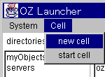
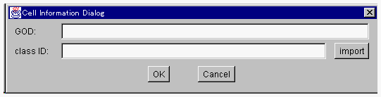
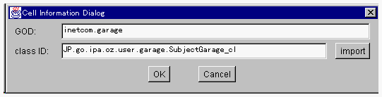
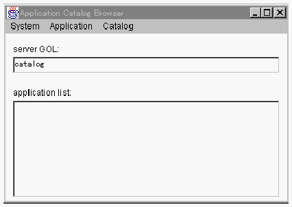

グローバルオブジェクトを生成する
ランチャを利用すると、ダイアログ形式でグローバルオブジェクトを生成することができます。

- １． Cell メニューから new cell メニュー項目を選択してください。

GOD と クラス識別子を入力するダイアログが開きます。

- ２．cell型クラスのクラス識別子(末尾が_cl)とGODをキー入力してください。GOD
は一意であれば任意ですが、どのクラスのオブジェクトであるかがわかる文字列が望まれます。
2つの値を入力したら、OKボタンをクリックしてください。

- 生成されたグローバルオブジェクトは inactive cells: リストに追加されます。うまく表示されない場合には、再表示してください。
上の例の場合には、directories: リストに「inetcom」が表示されます。そして、「inetcom」をダブルクリックすると、inactive
cells: リストに garage というエントリが表示されています。
- カタログサーバからのインポート
カタログサーバに登録されているカタログをOZホームにインポートしてそのグローバルオブジェクトを生成することができます。上記２．で表示されている
Cell Information Dialog の import ボタンをクリックしてください。
Application Catalog Browser が開かれます。最初に開かれる場合にはカタログサーバの入力を求めるダイアログが開かれます。

- application list: の中からカタログを選択し Application メニューから
new cell を選択すると、そのアプリケーションがOZホームにインポートされ、グローバルオブジェクトが生成されます。
(c) 1996-1998 IPA, ETL, AT21, FSIABC, FXIS,
InArc, MRI, NUL, SBC, Sharp, TEC, TIS. All rights reserved.